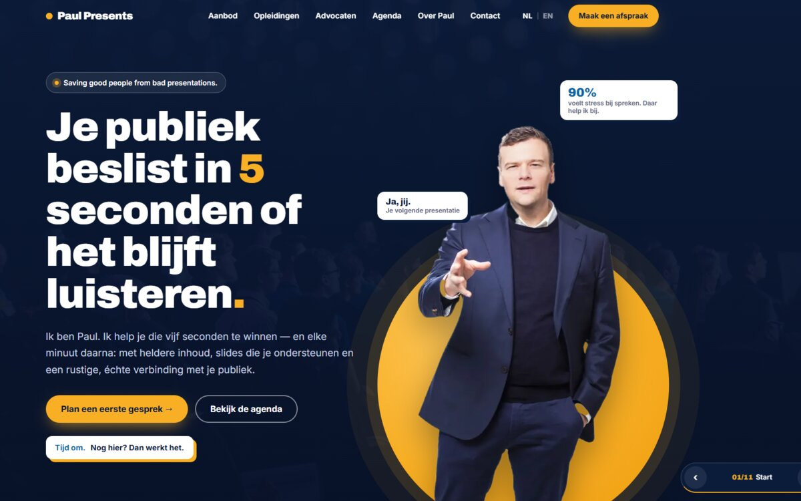
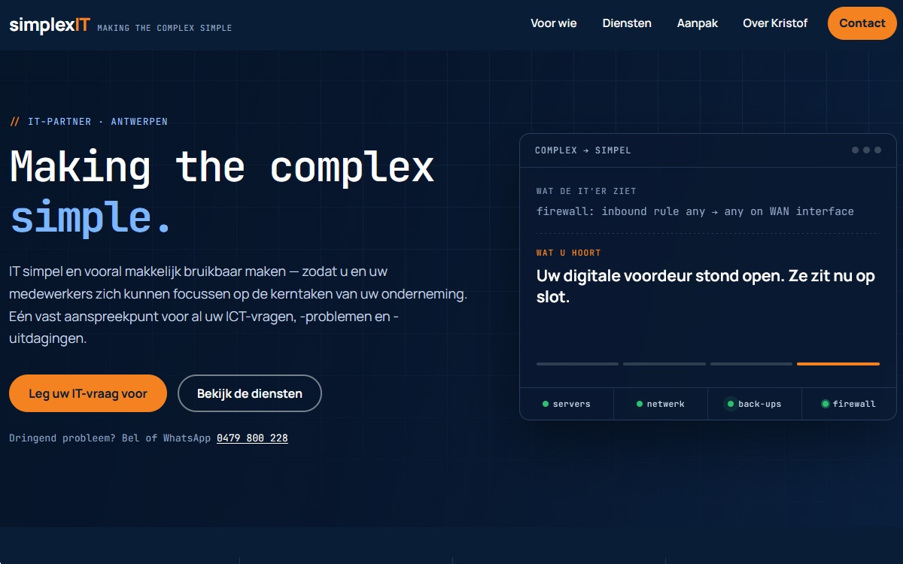
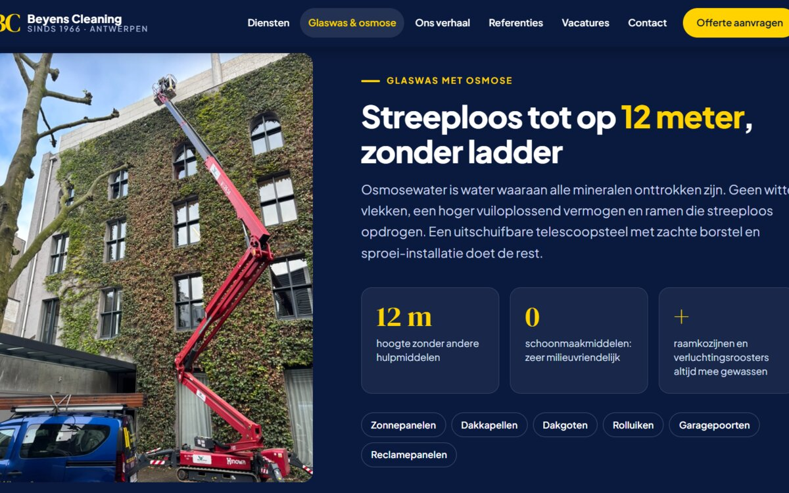
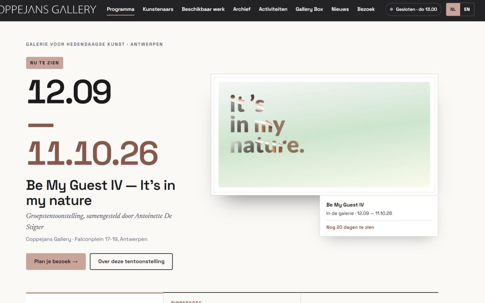
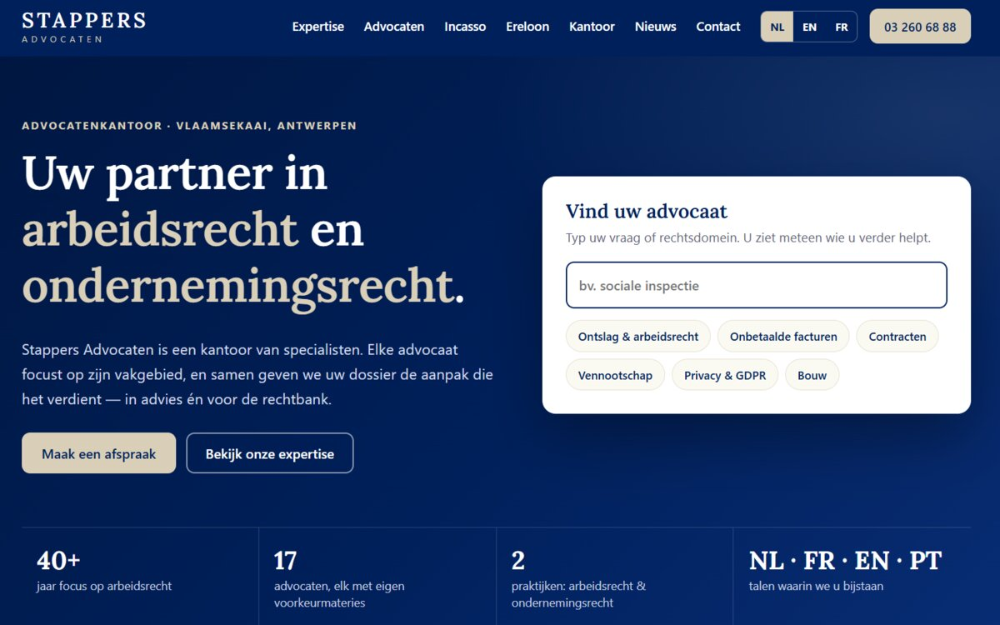
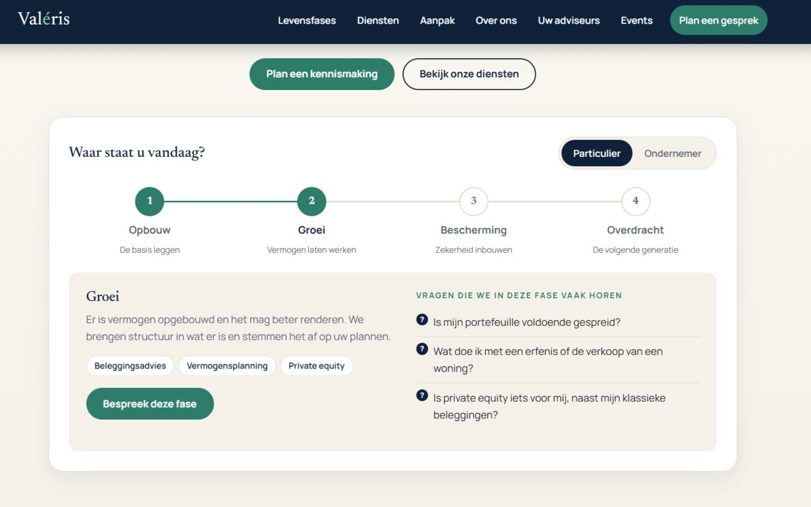
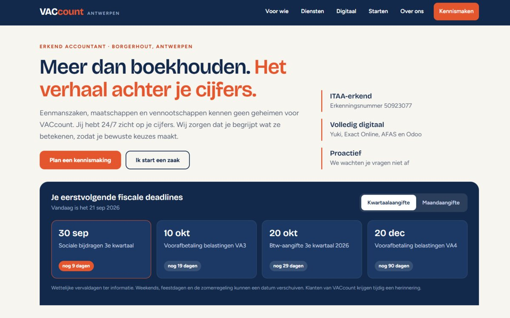
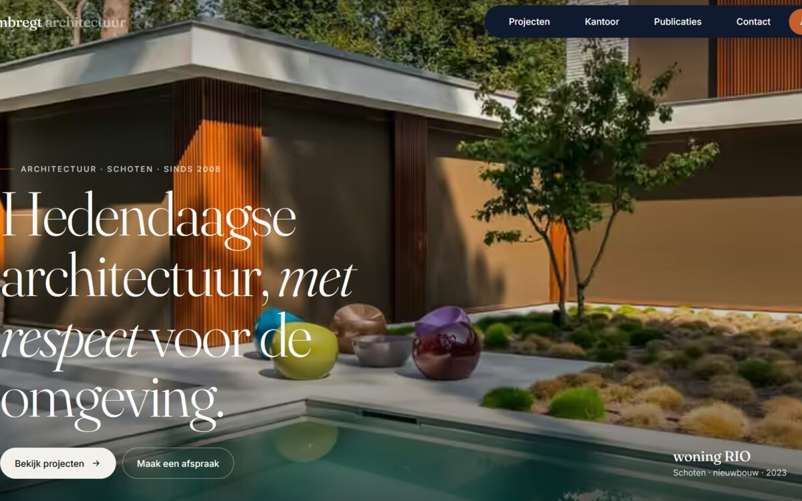
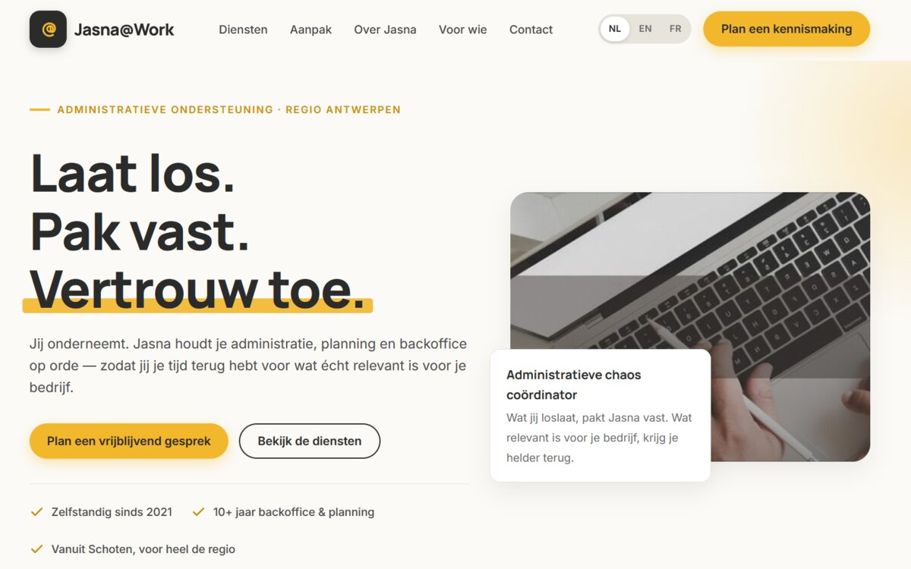
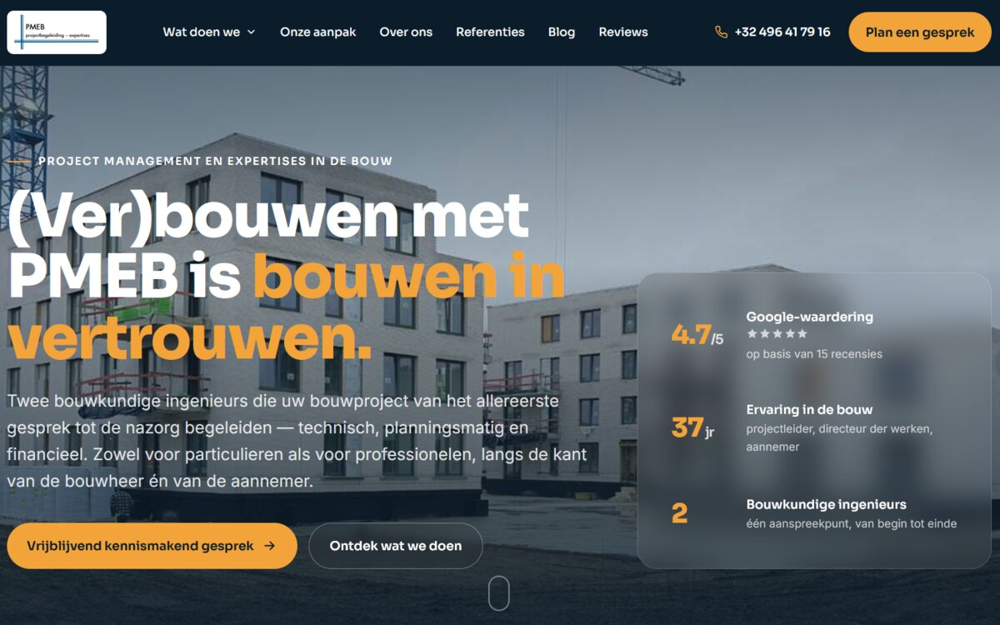

Website concepts, built for fellow BNI members.
A private showcase of concept sites for BNI Aan de Stroom (Antwerpen) — shared directly, not linked from the public AGV IT site or search engines.

Paul Presents
A bold, dark concept for a communication and presentation coach — his "story, design, coaching" offer laid out as three clear tracks, with a direct intake booking.

simplexIT
A concept for a one-person IT partner in Antwerp, built around the "Making the complex simple" tagline — with a live-style systems panel for servers, network, back-ups and firewall.

Beyens Cleaning
A concept for a family-run commercial cleaner since 1966 — led with its glass-and-osmosis specialty (streak-free up to 12 metres), real jobsite photography, and a quote flow per building type.

Coppejans Gallery
A concept for a contemporary art gallery in Antwerp — the current exhibition front and centre, bilingual NL/EN, built around the programme rather than a generic homepage.

Stappers Advocaten
A concept for an employment and corporate law firm — a "find your lawyer" search up front, so a visitor with a legal question is routed straight to the right specialist.

Valéris
A concept for a wealth-planning advisor — the client's stage of life (Opbouw, Groei, Bescherming, Overdracht) as the organising idea, with real advisor photos and a booking flow.

Vaccount
A concept for an Antwerp accountancy practice — ITAA credentials up front, a live-style upcoming-deadlines panel, and a clear path for both new and existing clients.

hansi ombregt architectuur
Contemporary architecture for new builds and renovations of homes, apartments and pavilions — a concept site for a studio based in Schoten, Antwerp.

Jasna@Work
Administrative support for entrepreneurs — planning, backoffice and follow-up, based in Schoten for the Antwerp region.

PMEB
Project management, expertise and safety coordination for construction projects — Vlimmeren, Antwerpse Kempen.